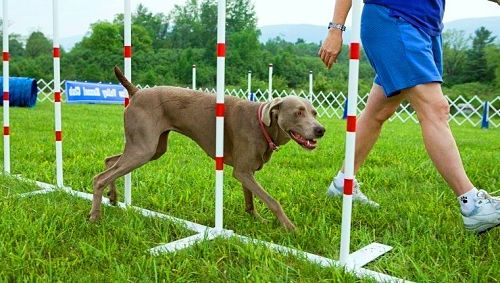
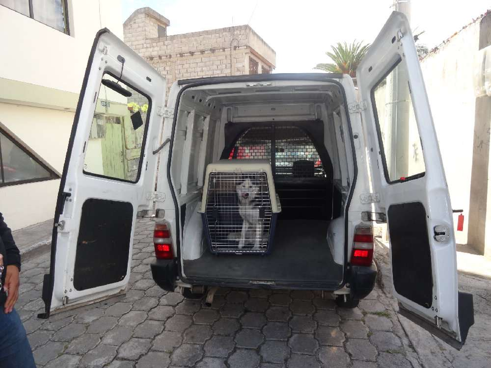

|
|
ADIESTRAMIENTO
El adiestramiento es la principal herramienta para cambiar el comportamiento de las mascotas.
La base principal de las técnicas de adiestramiento positivo, es la adicción de elementos que le gustan al animal cuando se obtiene el comportamiento deseado, tanto en forma de alimento, juguetes o gestos efectivos por parte de los dueños.
Si el dueño obtiene la respuesta que quiere que la mascota, le añade una recompensa. Aunque el animal gane aquello que le gusta, no pude tener la libertad de hacer lo que quiera, si no que es necesario establecer unos limites de los que debe hacer y los que no.

SIRVICIO PUERTA A PUERTA
Tu perro o gato viaja en el mismo día, sin esperas ni jaulas y en el asiento detrás del chófer. No usamos jaulas porque el viaje debe ser un motivo de disfrute de la mascota. Recogemos y entregamos puerta a puerta y en el día, evitando esperas en sitios desconocidos para los perros que pueden suponer un factor de estrés para el perro. Y si quieres, puedes acompañarnos durante el traslado.
Transportamos mascotas a cualquier lugar de Cayambel, a los precios más competitivos del mercado y con la garantía que da empatizar con los perros como si fueran nuestros.

VETERIANARIA
La medicina veterinaria es la aplicación de la medicina en los animales no humanos. Se ocupa de la prevención, diagnóstico y tratamiento de enfermedades, trastornos y lesiones en los animales no humanos. Al especialista se le podemos llamar como médico veterinario o simplemente veterinario.

PASEO DE MASCOTAS
Te ofrecemos paseos para tus mascotas por todo el cantón para que tu mejor amigo se sienta libre y reduzca sus niveles de estrés.

dirección: calle Luis cordero y alianza centro comercial el puesto del sol local nro.65
teléfono: 2102854- 096584235 correo: mascotitasfelices@gmail.com
2021-2022 derechos reservados